Lab 02: Analyzing Violent Crime
From thousands of crime reports to statistically significant hot spots, change through time, and public high schools near priority areas.
What are we investigating?
Imagine you are a crime analyst advising a city. Community groups are concerned about violent crime, and officials want to know how those incidents relate spatially to alcohol-serving businesses, poverty, and unemployment. Later, they want to identify nearby public high schools that may be relevant to a youth employment program.
You will use the real historical Chicago case-study data provided for the original Broken Bottles exercise. All analyses are performed in ArcGIS Pro on your own computer; this webpage is your illustrated instruction manual.
Measure statistically unusual concentrations with Getis-Ord Gi*.
Compare patterns on compatible geographic units.
Recognize where crime hot spots persist or intensify.
Select schools within a specified distance of priority areas.
Download the two datasets for class
These are real Chicago GIS files, not practice data generated for this website. Download both ZIP files before beginning the ArcGIS Pro exercises. The downloads are hosted by their original data providers.
Crime analysis project and supporting layers
Official Esri case-study ZIP containing BrokenBottlesPkg.ppkx and historical data for crime incidents, liquor vendors, public schools, poverty and unemployment. Use this file in Steps 1–9.
Chicago neighborhood boundaries
City of Chicago neighborhood polygons as a Shapefile ZIP. Download and extract the ZIP; in Step 1.2, add the .shp file to ArcGIS Pro to count robberies by neighborhood. View dataset details ↗
BrokenBottlesPkg.ppkx in ArcGIS Pro. (4) When you reach Step 1.2, use Map → Add Data to add the extracted neighborhood .shp. Keep its companion .shx, .dbf, and .prj files together.What layers should I see?
Violent Crime 2014— point incidents with offense type and date.Liquor Vendors— alcohol-related establishments.Analysis Boundary— the extent of analysis.Poverty.lpk— historical ACS poverty data.Unemployment.lpk— 2015 unemployment data.Public High Schools— schools used in the final selection.
Layer names and formatting may vary slightly with the ArcGIS Pro version. Use the equivalent field or layer if its label differs.
Working outputs: Save new feature classes in the project geodatabase and save the .nc space-time cube in a regular folder. The original ZIPs should stay unchanged for future reference.
Data providers: Esri / ArcGIS Online ↗ and City of Chicago via Data.gov ↗. All instructions and illustrations on this website were prepared for Location Science. The figures show tool settings and analytical concepts; they are not ArcGIS Pro screenshots or computed maps from the data.
Nine guided steps
Open a chapter, then open its smaller substeps. Every substep tells you what to click, why it matters, and what to look for.
01EXPLORATORY DATA ANALYSISExplore the crime data and neighborhoodsOpen the project · inspect categories · summarize robberies by neighborhoodStart here
Understanding the original crime records, then making a neighborhood-level summary. We need to know the attribute fields and study area before using any statistical tool.
Exploratory analysis catches unexpected values, missing coordinates, and category issues. Spatially joining crime points to neighborhoods converts individual reports into an interpretable summary.
1.1 Open the project package and examine incidents
- Extract the downloaded ZIP. Open ArcGIS Pro → Open another project → Browse.
- Select
BrokenBottlesPkg.ppkxand allow the project to unpack. - In Contents, right-click
Violent Crime 2014→ Attribute Table. - Identify
Primary TypeandDate. Use a frequency summary (for example, Summary Statistics withPrimary Typeas a case field) to identify offense categories and counts.
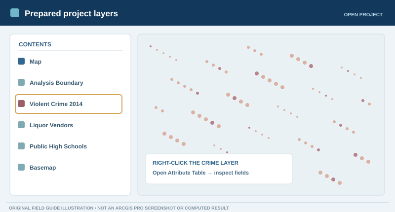
1.2 Add Chicago neighborhood boundaries and count robberies
- Use the Chicago neighborhood Shapefile ZIP ↗ (File 2 above). Extract it, then use Map → Add Data to add its
.shplayer. - Use Select By Attributes on
Violent Crime 2014to select the offense categoryROBBERY. - Open Spatial Join. Use neighborhood polygons as Target Features, the selected crime incidents as Join Features, One-to-one join, and Intersect. Save the output.
- Sort the output's
Join_Countin descending order to identify the neighborhood with the most selected robberies. Clear the selection afterward.
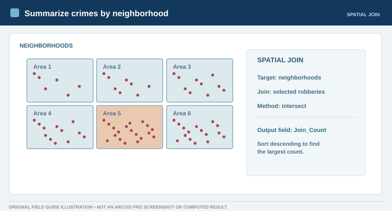
02SPATIAL STATISTICSFind significant violent-crime hot spotsOptimized Hot Spot Analysis · fishnet grid · Gi* interpretationNot started
Aggregate thousands of violent-crime incidents into regular cells and test for statistically unusual clusters of high and low counts.
A dense point map can be visually misleading. Getis–Ord Gi* evaluates each location relative to neighboring locations; it provides statistical evidence of clustering instead of just a colored heat map.
2.1 Run Optimized Hot Spot Analysis
- Open Analysis → Tools and search Optimized Hot Spot Analysis.
- Enter the parameters shown below. Save the output in your project geodatabase.
- Click Run. Open View Details / Messages to inspect the calculated cell size and neighborhood distance.
Violent Crime 2014ViolentCrimeHotSpotsCount incidents within fishnet gridAnalysis Boundary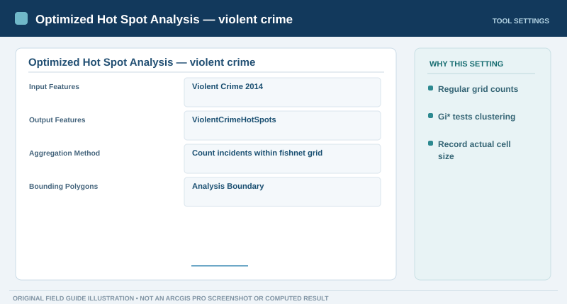
2.2 Interpret the result and compare fishnet with hexagons
- Inspect the output's red and blue cells. Open the attribute table and locate the
Gi_Binfield (its full name can contain a distance suffix). - Find the reported grid size and analysis distance in tool messages. The original historical workflow reported a cell size near 1,375 feet; use your actual tool messages as the authority.
- As a short comparison, rerun the tool with Count incidents within hexagon grid. Notice how cell geometry influences what you see.
- Return to the fishnet result for all remaining steps.
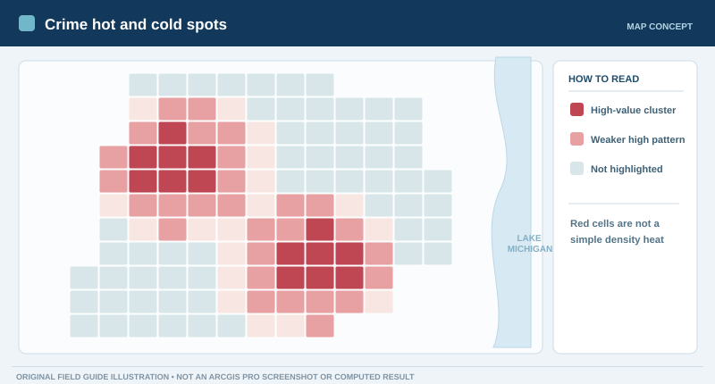
Gi_Bin = +3 means a statistically significant high-value cluster at the 99% confidence category; it is not a raw crime count. The software's statistical corrections and neighborhood choice affect the classification.03COMPARABLE GEOGRAPHYFind liquor-vendor hot spotsReuse the crime grid · compare clustering patternsNot started
Run hot spot analysis on liquor-vendor points, using the exact crime output cells as the counting polygons.
Using a different grid could make the patterns look artificially similar or different. Matched aggregation polygons let you compare the two activity spaces more fairly.
3.1 Aggregate vendors inside the crime grid
- Open Optimized Hot Spot Analysis again.
- Set Input Features to
Liquor Vendors. - Choose Count incidents within aggregation polygons, then choose
ViolentCrimeHotSpotsas the polygons. - Run the analysis and save as
LiquorVendorHotSpots.
Liquor VendorsLiquorVendorHotSpotsCount incidents within aggregation polygonsViolentCrimeHotSpots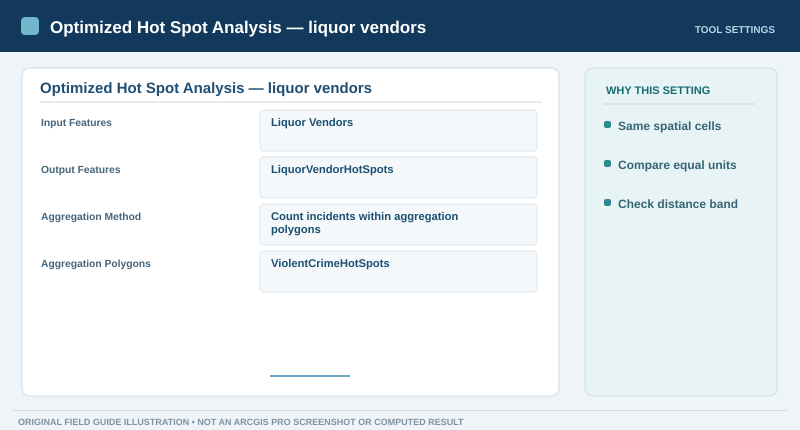
3.2 Check that the two results are comparable
- Compare both hot spot maps. Look for areas where red cells overlap, but also for non-overlap.
- Compare the neighborhood distances reported in both tools' messages. If they differ, use Hot Spot Analysis (Getis-Ord Gi*) with a fixed distance matching the crime result before making strict inferential comparisons.
- Do not redraw a fresh vendor fishnet; retain the shared crime grid.
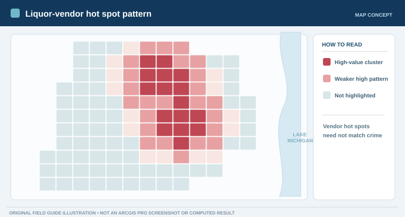
04SOCIOECONOMIC CONTEXTMap poverty hot spotsLoad the prepared poverty layer · analyze its numeric fieldNot started
Identify clusters of high values in the historical poverty dataset using an attribute field rather than event-point counts.
Comparing crime, vendors, and poverty adds social context. Analyzing a socioeconomic field also teaches the difference between point-incident aggregation and analysis of a measured polygon attribute.
4.1 Add Poverty and run the hot spot tool
- Locate
Poverty.lpkin your extracted original package. Add the layer to the ArcGIS Pro map. - Open Optimized Hot Spot Analysis and select the poverty layer as the input.
- Choose the field representing 2009–2013 ACS households with income below the poverty level (look for the equivalent alias in your version).
- Save the result as
PovertyHotSpotsand run.
Poverty2009–2013 ACS Households with Income Below Poverty LevelPovertyHotSpots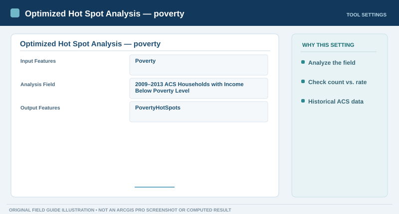
4.2 Compare poverty and crime patterns
- Inspect the red poverty hot spots and compare them with the crime and vendor maps.
- Determine whether any of the
Gi_Bin = 3cells overlap. - Remember: the source field refers to households below poverty level; it may be a count, not a percentage. Do not describe it as a rate without checking its units.
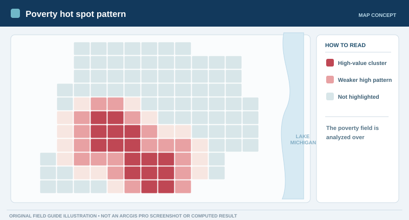
05SPATIAL OVERLAYFind where three sets of hot spots overlapSelect 99%-confidence cells · Intersect selected polygonsNot started
Select only the strongest positive hot spot category in each of the three analyses, then intersect their geometries.
Intersect answers a more focused question than simple visual comparison: which exact places meet all three specified spatial criteria?
5.1 Select the 99%-confidence hot spots
- Open Select Layer By Attribute.
- Run it separately on
ViolentCrimeHotSpots,LiquorVendorHotSpots, andPovertyHotSpots. - In each layer, choose the
Gi_Binfield (the exact name may include the analysis distance) and select records where it equals 3. - Confirm the selected feature count for each layer. Leave all three selections active.
Each of the three hot spot outputsNew selectionGi_Bin [or matching suffixed field] = 3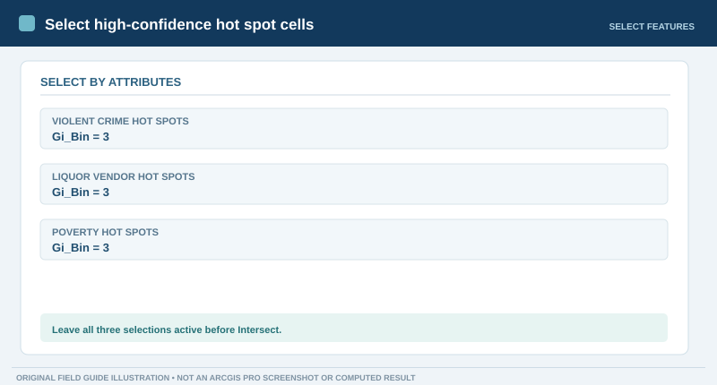
5.2 Run Intersect on the three selected layers
- Open Analysis → Tools → Intersect.
- Add all three hot spot layers as input features while their selections remain active.
- Save the output as
iCrimeLiquorPovertyand run. Clear the selections and hide other layers to inspect the result.
ViolentCrimeHotSpots + LiquorVendorHotSpots + PovertyHotSpotsiCrimeLiquorPoverty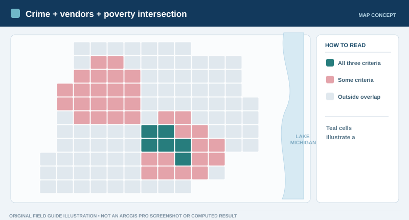
06SPACE–TIME PATTERN MININGBuild a space-time cube and analyze crime trendsFour-week bins · netCDF · Emerging Hot Spot AnalysisNot started
Group violent-crime incidents by both geographic cell and four-week period, then classify how hot spot patterns evolve across time.
A static hot spot summarizes an entire year. A space-time cube can reveal whether an area has been consistently high, is intensifying, or only recently emerged.
6.1 Set the processing extent and create the cube
- Open Create Space Time Cube By Aggregating Points.
- In Environments, set Extent to
Analysis Boundaryto keep the spatial frame consistent. - Complete the settings below. The distance should match the cell size reported by your crime hot spot analysis (approximately 1,375 feet for the prepared Chicago data in the historical workflow; verify your own tool messages).
- Save
ViolentCrimeCube.ncto a regular folder, not a file geodatabase. Run the tool.
Violent Crime 2014ViolentCrimeCube.ncDate4 WeeksEnd timeMatch crime grid (often about 1375 Feet)Analysis Boundary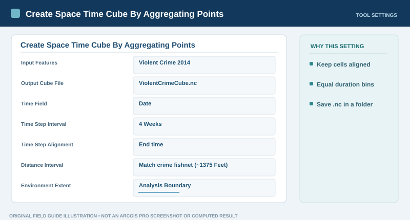
6.2 Understand the netCDF output
The cube stores values indexed by place and time. Each vertical stack represents one geographic bin; each level is a four-week period. The completed cube may not automatically appear as a normal map layer.
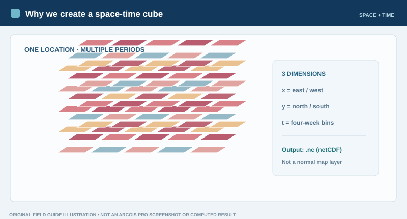
ViolentCrimeCube.nc exists in your output folder.6.3 Run Emerging Hot Spot Analysis
- Open Emerging Hot Spot Analysis.
- Use the new cube as the input; select the
COUNTvariable. - Set the neighborhood distance to 0.5 Miles, time-step neighborhood to 1, and mask to
Analysis Boundary. - Run, then inspect the resulting categories for consecutive, intensifying, persistent, sporadic, and other patterns.
ViolentCrimeCube.ncCOUNTViolentCrimeTrends0.5 Miles1Analysis Boundary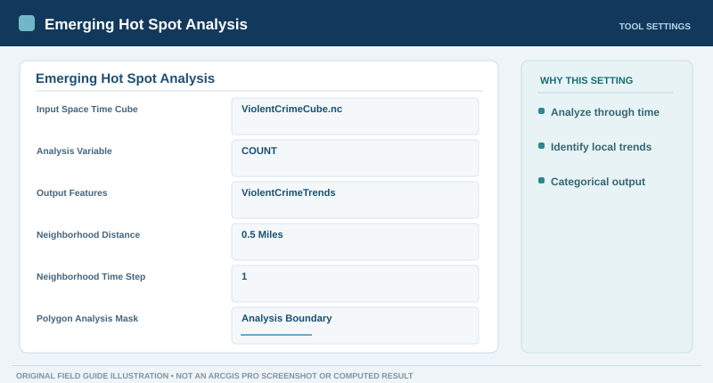
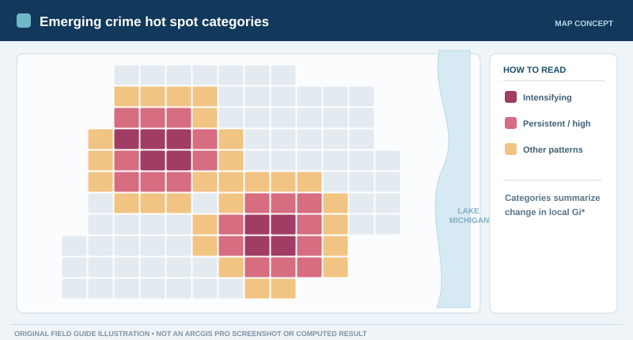
ViolentCrimeTrends layer contains a categorical trend field. You will use this field in Step 8.07SOCIOECONOMIC COMPARISONFind unemployment-rate hot spotsLoad the historical unemployment layer · Gi* analysisNot started
Identify where the 2015 unemployment rate forms statistically significant high-value clusters.
We now have a possible social-context variable to compare against the time-varying crime patterns. Unlike the poverty layer's household count, this layer is analyzed using an unemployment rate.
7.1 Add the unemployment layer and run Gi*
- Find
Unemployment.lpkin the extracted project data and add it to the map. - Open Optimized Hot Spot Analysis and enter the settings below.
- Run and compare the result with the
ViolentCrimeTrendsmap.
Unemployment2015 Unemployment RateUnemploymentRateHotSpots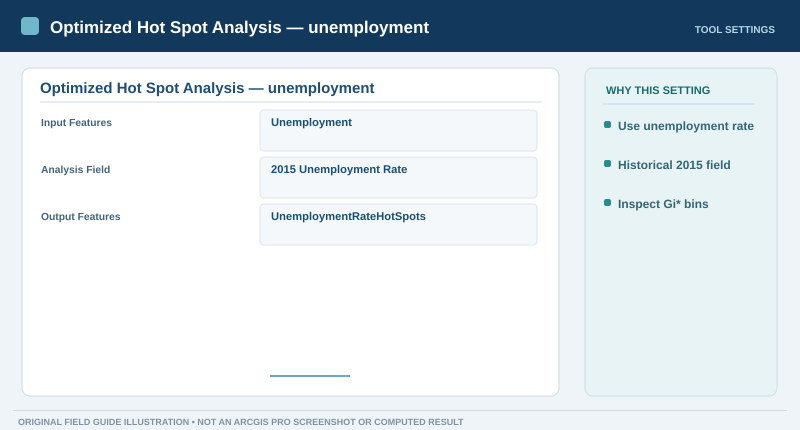
7.2 Examine the unemployment hot spot pattern
Identify cells with Gi_Bin = 3 in the output (the full field name may include distance and FDR details). Compare those locations visually with the persistent, consecutive, and intensifying crime trend areas.
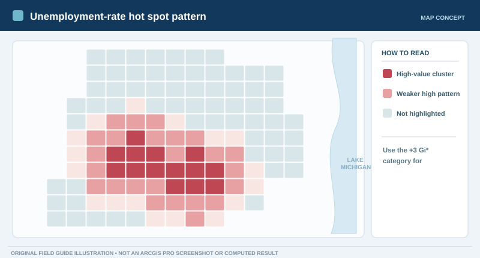
08SELECT + INTERSECTOverlay crime trends and unemployment hot spotsConsecutive / intensifying / persistent crime × 99% unemploymentNot started
Identify the areas that both exhibit concerning crime trends and are statistically significant unemployment hot spots.
This combines space-time evidence with a contextual spatial indicator. The result is a defined geographic set that can be used for a transparent proximity query in the next step.
8.1 Select three crime trend types and unemployment hot spots
- Run Select Layer By Attribute on
ViolentCrimeTrends. - Build an OR expression for the
Pattern Type COUNTfield:Consecutive Hot Spot,Intensifying Hot Spot, orPersistent Hot Spot. - Run Select Layer By Attribute on
UnemploymentRateHotSpotsand select theGi_Binequivalent equal to 3. - Verify both selections are active. When using the ArcGIS expression builder, add each completed clause before applying the selection.
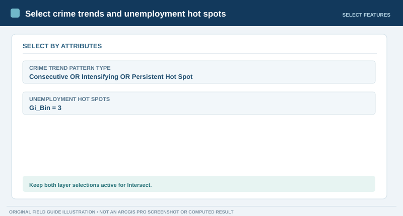
8.2 Intersect the selected trend and unemployment polygons
- Open Intersect.
- Add
ViolentCrimeTrendsandUnemploymentRateHotSpotsas inputs, preserving active selections. - Save the result as
iCrimeUnemp, run, and clear selections to inspect the new polygons.
ViolentCrimeTrends + UnemploymentRateHotSpotsiCrimeUnemp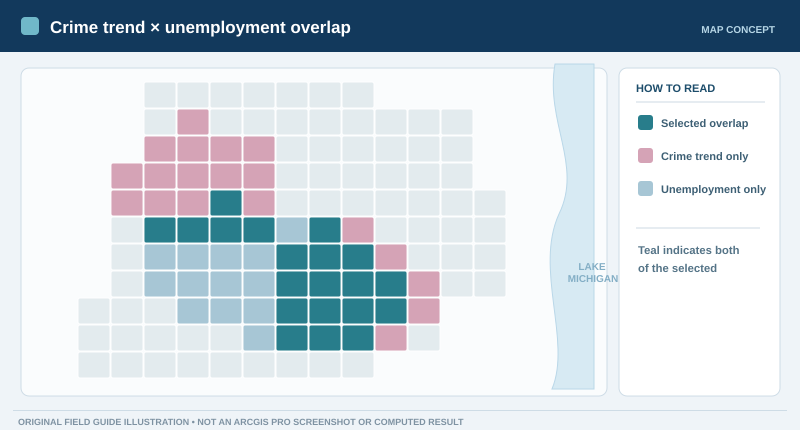
iCrimeUnemp exists and contains only shared areas, if any.09FINAL STEP · PROXIMITY ANALYSISSelect public high schools within a quarter mileSelect Layer By Location · 0.25 miles · optional Copy FeaturesNot started
Find public high schools situated within 0.25 miles of the areas identified in the crime-trend and unemployment intersection.
Proximity analysis turns an abstract priority-area map into a list of actual facilities. It illustrates how analysts can connect area-level findings to locations for further assessment—without implying the schools are responsible for crime.
9.1 Select schools by their distance to the overlap
- Ensure
Public High SchoolsandiCrimeUnempare in the map. - Open Select Layer By Location.
- Set the input to
Public High Schools, relationship to Within a distance, selecting layer toiCrimeUnemp, and search distance to 0.25 Miles. - Click Run and inspect the selected school features and their attribute table.
Public High SchoolsWithin a distanceiCrimeUnemp0.25 Miles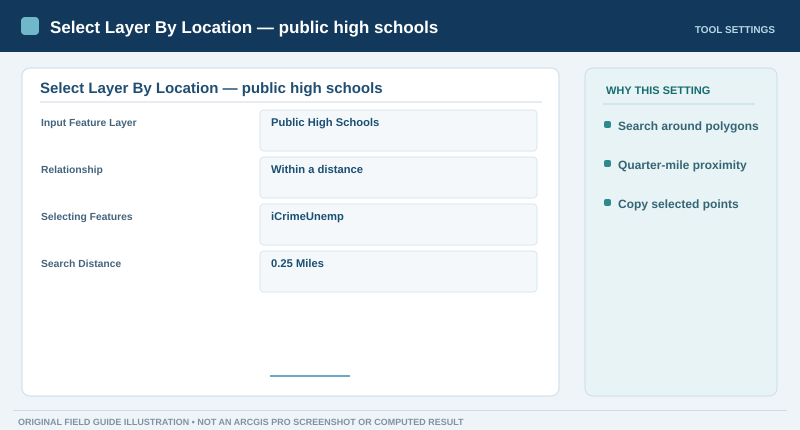
9.2 Inspect the selected schools and optionally save them
- Open the schools attribute table and choose Show Selected Records to see which schools were selected.
- Optional: run Copy Features on the selected
Public High Schoolslayer. Save the result asSelectedHighSchools. - Make sure the map legend distinguishes the overlap areas and selected school points.
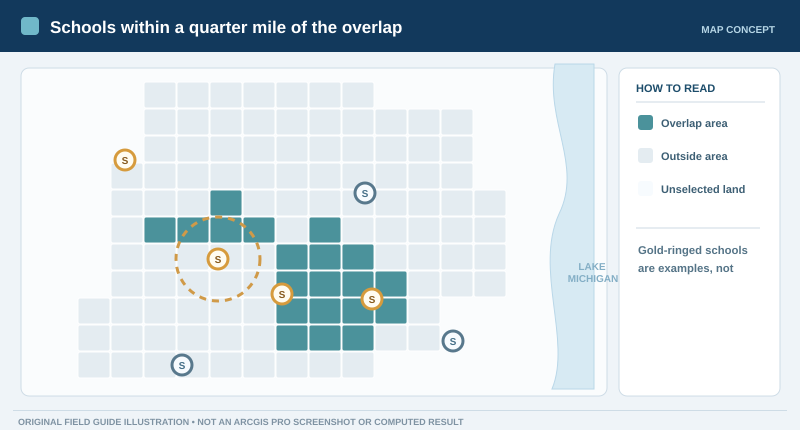
SelectedHighSchools feature class. This is where the lab ends.Save your observations
You've completed the requested workflow, ending with the quarter-mile public-high-school selection. Download your responses and retain your ArcGIS Pro project and output feature classes.
Responses are saved in your browser only; this website does not collect or grade them.